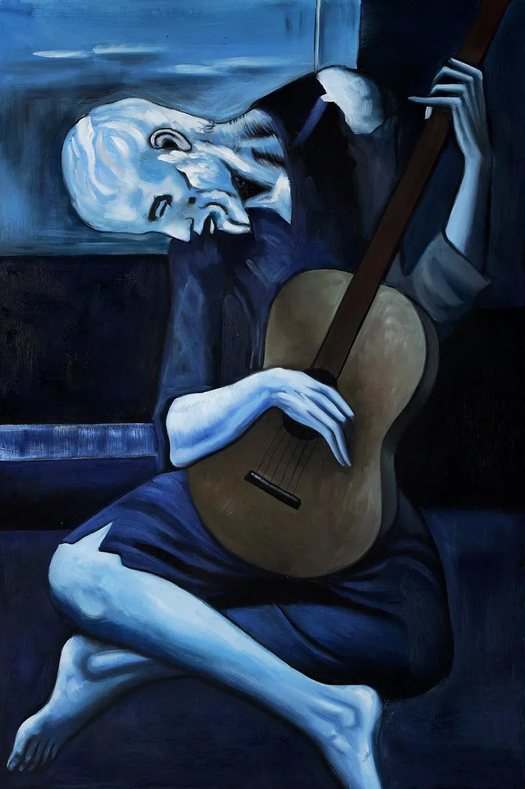

Découvrez les plus belles œuvres artistiques à travers le temps. Explorez nos collections et apprenez-en plus sur chaque tableau.
Les travaux artistiques:

La Nuit Étoilée - Vincent van Gogh (1889):
- Description : Ce tableau a été peint pendant que Van Gogh séjournait à l'asile de Saint-Rémy-de-Provence. Il représente un ciel nocturne tourmenté avec des étoiles scintillantes et une lune brillante, au-dessus d'un petit village endormi. Le mouvement tourbillonnant du ciel reflète l'état émotionnel instable de l'artiste à cette époque.
- Impact : Il s'agit d'une des œuvres les plus connues de Van Gogh, symbolisant le génie et le tourment d'un artiste incompris de son vivant.

La Joconde (Mona Lisa) - Léonard de Vinci (1503-1506):
- Description : Peinte pendant la Renaissance italienne, ce portrait représente Lisa Gherardini, épouse d’un marchand florentin. Son sourire énigmatique et son regard captivant ont fasciné les spectateurs pendant des siècles.
- Impact : C'est l'un des tableaux les plus célèbres du monde, conservé au musée du Louvre à Paris, attirant des millions de visiteurs chaque année.

Le Cri - Edvard Munch (1893):
- Description : Ce tableau emblématique de l’expressionnisme illustre une figure humaine désespérée, criant dans un paysage apocalyptique. Inspiré par une promenade où l’artiste ressentait une angoisse profonde, Munch a capturé l’essence de l’anxiété humaine.
- Impact: Le Cri est devenu un symbole universel de l’angoisse existentielle et des troubles psychologiques.
La Persistance de la Mémoire - Salvador Dalí (1931):
- Description : Ce tableau surréaliste est célèbre pour ses montres molles qui semblent fondre dans un paysage désertique. Dalí a voulu représenter le concept du temps comme étant fluide et insaisissable.
- Impact : Ce tableau est l’une des œuvres les plus connues du surréalisme, mettant en avant la capacité de Dalí à combiner réalisme et imaginaire.

The Old Guitarist - Pablo Picasso (1903):
- Description : Peinte pendant la période bleue de Picasso, cette œuvre représente un musicien aveugle jouant de la guitare, dans une posture de désespoir. Les tons bleus dominants reflètent une atmosphère de tristesse et de solitude.
- Impact : Ce tableau est devenu un symbole de compassion envers les moins fortunés, tout en mettant en lumière l’émotion brute et la profondeur des œuvres de Picasso.